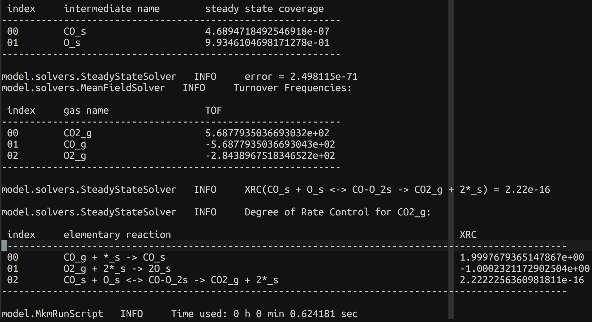

Work Report
Code optimization
Compatibilty
of Python2 & Python3
Use
CMake
to build program
Re-compile
code with Clang/LLVM
Simplify
Kynetix: remove GMPy module
Modify functions for
XRC
calculations.
Sensitivity wrt reactions
